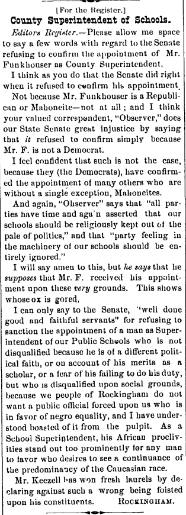
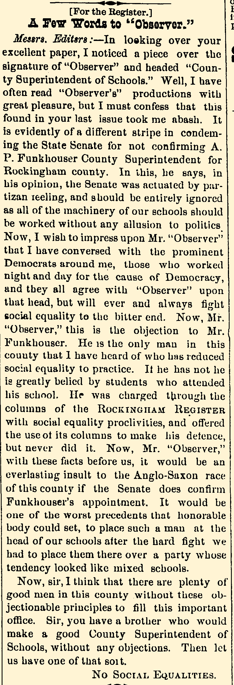
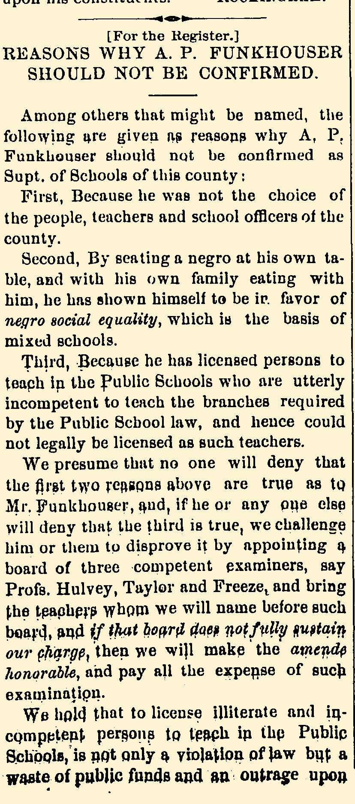

In 2007, James Madison University (JMU) celebrated the centennial of the state college — beginning in 1908 — which claimed the women’s teaching college, the foundation of Madison College, was the beginning of higher education in Harrisonburg. However, that omitted important components of Harrisonburg’s educational history, according to local historian Evan Knappenberger, who wrote and published a book titled “The common Roots of Bridgewater College, Shenandoah University, Gosha College, James Madison University, and Eastern Mennonite: a historical, biographic sketch” in 2022.
In 1875, about 30 years before JMU, A.P. Funkhouser founded the Shenandoah Institute in Dayton. It later became Shenandoah University and moved to Winchester in 1958. Funkhouser held racially progressive views for the times, similar to fellow education founders in the area. Funkhouser was an ordained bishop and gave a sermon centered around having dinner with a Black man that resulted in the local newspaper calling for Funkhouser to be lynched.
In 1887, after Funkhouser was expelled from the institute for his views, he assisted in founding another Shenandoah Normal College in Harrisonburg. The current Harrisonburg jail sits in its original location.
Two of Funkhouser’s colleagues, L.J Heatwole and his brother Cornelius Heatwole both attended college there. L.J Heatwole would go on to found Eastern Mennonite University. Cornelius Heatwole was one of the founding members of the Harrisonburg Women’s State Normal and Industrial School — the beginnings of JMU.
Getting a state funded teaching college in Harrisonburg was no easy feat. It took close to 40 years of petitioning by men like Funkhouser, the Heatwoles, and many others. Those passionate men came together to create the Rockingham Teachers Association in 1890 — a powerful group with 400-500 members “who preached for inclusion of races in schools,” Knappenberger said. Members of this association helped found countless prominent universities in Virginia aside from JMU.
Despite the immense impact of Harrisonburg’s educational roots, it has been written out of the town’s history. However, history can live outside of written documents. For example, historical buildings can serve as physical reminders of the past that are not so easily brushed aside. Or are they?
In April of 2022, a blaze of controversy was ignited upon the town over that exact question. The home of Talfourd Noon, T.N., Hass, member of the Teachers Association and prominent judge in the late 1800s, was demolished.